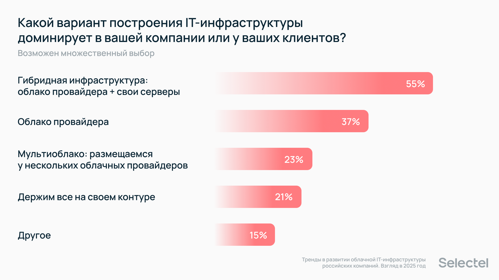

Гибридное облако и безопасность данных. Тренды IT-инфраструктуры в 2024 году
Компания Selectel подвела итоги своего ежегодного исследования, посвященного изменениям, вызовам и планам по развитию облачной IT-инфраструктуры в российских компаниях. В исследовании приняло участие более 300 специалистов, которые развивают и администрируют IT-инфраструктуру своей организации или внешних заказчиков.
- Потребность российского бизнеса в облачной инфраструктуре растет — порядка 80% компаний привлекают облачных провайдеров для решения инфраструктурных задач.
- 48% опрошенных IT-экспертов обозначили обеспечение безопасности данных как ключевой фокус бизнеса в рамках развития IТ-инфраструктуры.
- Растет уровень цифровизации компаний — 33% респондентов подтвердили внедрение новых технологий в бизнес-процессы.
На первом плане — гибридные облака
По результатам опроса, абсолютное большинство компаний (55%) сегодня управляют IT-инфраструктурой по гибридной модели, совмещая облако провайдера и собственные серверы. В свою очередь, более трети опрошенных (37%) размещают IT-системы исключительно в облаках, а 23% компаний пользуются услугами сразу нескольких провайдеров. Реже встречаются компании, которые держат IT-инфраструктуру в собственном контуре (21%). 
«Лаборатория Касперского» выпустила приложение KVRT для сканирования ПК на Linux на наличие угроз и вредоносов
«Лаборатория Касперского» представила портативное приложение (portable app) под названием KVRT (Kaspersky Virus Removal Tool) для сканирования Linux-систем на наличие угроз и вредоносных приложений, включая вирусы, бэкдоры, трояны, рекламные и шпионские приложения, а также приложения, которых могут способствовать осуществлению атак на систему. Кроме проверки файлов, программа KVRT сканирует память и загрузочные секторы. Проект поддерживает консольный и графический режимы работы, а также возможность запуска без прав root (функциональность при этом будет ограничена проверкой доступных пользователю файлов). В процессе работы осуществляется отправка телеметрии, включающей данные о выявленном вредоносном ПО, на серверы KSN (Kaspersky Security Network).